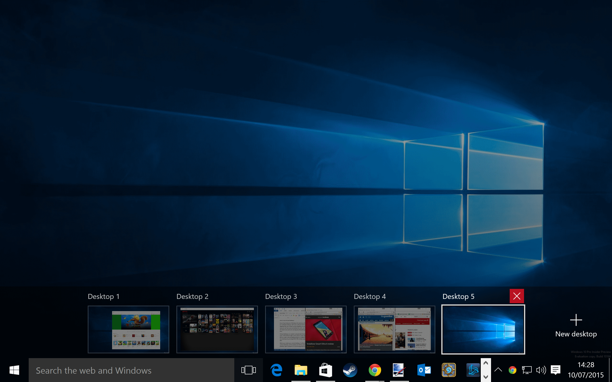
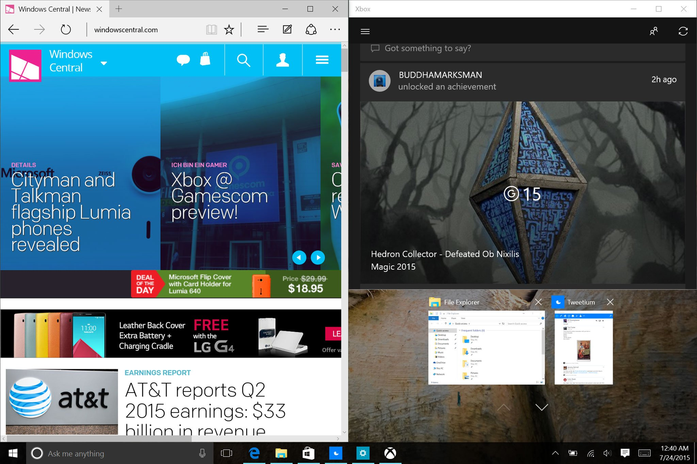
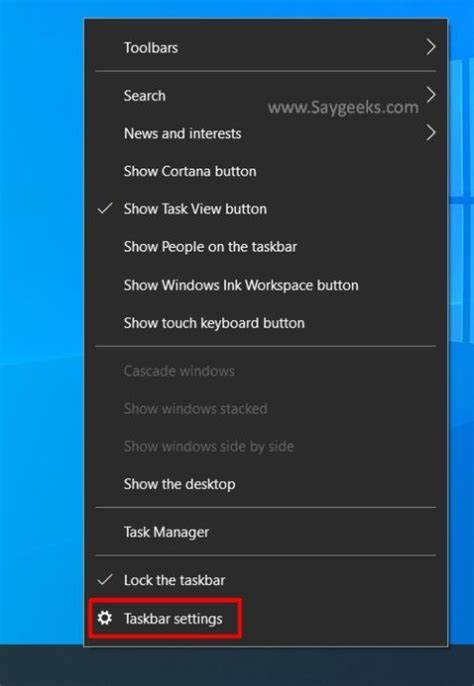

Android
Android Windows
Windows Fast Edit 2
Fast Edit 2Tips and tricks for Windows Start Menu
Here are some useful tips and tricks for Windows desktop:
1. Virtual Desktop
Virtual desktops in Windows provide a way to organize and manage your open windows and applications. Here are some tips and tricks to make the most out of virtual desktops:
1.Creating Virtual Desktops: Press Win + Tab to open the Task View, and then click on the "New Desktop" button in the bottom right corner. Alternatively, you can use the keyboard shortcut Win + Ctrl + D to create a new virtual desktop directly.
2.Switching Between Virtual Desktops: To switch between virtual desktops, use the keyboard shortcut Win + Ctrl + Left/Right Arrow. You can also use the Task View (Win + Tab) to select the desired desktop.
3.Moving Windows between Virtual Desktops: You can move windows between virtual desktops easily. Open Task View (Win + Tab), then drag and drop the window you want to move onto the desired virtual desktop.
4.Customizing Virtual Desktops: Right-click on the Taskbar and go to "Taskbar settings." Scroll down to the "Multiple displays" section and enable the option "Show taskbar on all displays" to have the taskbar appear on all virtual desktops. You can also rename virtual desktops by clicking on their thumbnails in Task View.
5.Keyboard Shortcuts: In addition to the shortcuts mentioned above, you can use Win + Ctrl + F4 to close the current virtual desktop. Pressing Win + Ctrl + F will open the Task View on the current desktop.
6.Taskbar Preview: Hovering over the Taskbar icon of an application that is open on another virtual desktop will show a preview of that desktop, allowing you to quickly switch to it.
7.Keyboard Shortcut Navigation: Once in the Task View, you can navigate through virtual desktops using the arrow keys and press Enter to select a desktop.
8.Pinning Applications: If there are specific applications you want to have on all virtual desktops, right-click on their Taskbar icon and select "Show this window on all desktops."
Using virtual desktops can help you organize your workflow, keep related tasks grouped together, and reduce clutter on a single desktop. Experiment with these features and find the setup that works best for your productivity needs.

2. Snapping windows
Snapping windows is a convenient feature in Windows that allows you to quickly position and resize windows on your desktop. Here's a quick summary of how to snap windows:
- Snap to the Left or Right: Drag a window to the left or right edge of the screen until it snaps into place. This automatically resizes the window to take up half of the screen.
- Snap to the Top: If you want a window to occupy the entire screen, drag it to the top edge until it snaps into place. This maximizes the window.
- Snap to Corners: To position a window in one of the four corners of the screen, drag it to the respective corner until it snaps into place. This resizes the window to take up a quarter of the screen.
- Snap between Monitors: If you have multiple monitors, you can also snap windows between them. Drag a window to the edge of one monitor and continue dragging to the next monitor to snap the window across both screens.
These snapping techniques are great for multitasking and organizing your workspace. They allow you to easily work with multiple windows side by side, maximize your screen real estate, and improve productivity.

3. Customize Taskar
You can easily customize your taskbar through desktop.
- Taskbar Customization: Right-click on the taskbar to access various customization options. You can lock/unlock the taskbar, hide it in desktop mode, show/hide specific icons, and more.

4. All settings and options of Windows at one place. How?
"God Mode" is a hidden feature in Windows that provides access to a comprehensive list of all available settings and options in one place. Enabling God Mode creates a folder that contains shortcuts to various configuration options, making it convenient to customize and manage your system. Here's how to enable God Mode:
- Create a new folder on your desktop or any desired location.
- Right-click on the newly created folder and select "Rename".
- Copy and paste the following text as the folder name:
GodMode.{ED7BA470-8E54-465E-825C-99712043E01C} - Press Enter to save the folder name. The folder icon will change to a control panel icon.
After enabling God Mode, you can open the folder to access a comprehensive list of settings grouped into different categories. These settings cover various aspects of your system, including system, display, network, security, and more. You can browse through the options, customize settings, and access features that may not be readily available in the standard Windows settings.
Note: The term "God Mode" is just a colloquial name given to this feature, and it does not grant any special privileges or control over your system. It's simply a convenient way to access and manage Windows settings in one place.